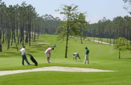
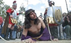
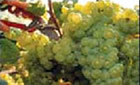

|
 |
 |
 |
| COUNTRY HOUSE |  |
LOCATION | |
CONTACT US | MONASTERY | GOLF | |
ROUTES | |
BEACHES | |
CELEBRATIONS | |
|
|
CELEBRATIONS: COUNCIL OF MEIS  The
gastronomic field of the municipality begins to be taken care of with a
special affection. Tourists and visitors who come to this council
achieve a careful cooking answer, as the quality of its meats,
appreciated in the whole Galicia, and the delicacy of its country
products which are grown here gives the result of a remarkable supply
offered in the restaurants, hostels and other hotel industry of the
zone. The wines stand out for their quality mainly the albariños and de
caíños. As far as the first ones, their fame and prestige are guaranteed
by the denomination of origin Rías Baixas, and regarding to the seconds
the invitation comes to the open minds, those who know how to appreciate
the elaboration of a traditional wine. The
gastronomic field of the municipality begins to be taken care of with a
special affection. Tourists and visitors who come to this council
achieve a careful cooking answer, as the quality of its meats,
appreciated in the whole Galicia, and the delicacy of its country
products which are grown here gives the result of a remarkable supply
offered in the restaurants, hostels and other hotel industry of the
zone. The wines stand out for their quality mainly the albariños and de
caíños. As far as the first ones, their fame and prestige are guaranteed
by the denomination of origin Rías Baixas, and regarding to the seconds
the invitation comes to the open minds, those who know how to appreciate
the elaboration of a traditional wine. The fair and the market of cattle which take place the 2nd and 4th Saturday every month in the place of O Mosteiro, the capital of the Council, show a clear way of rich agricultural economy. At the present time this fair is still one of the most important ones in the province. The celebrations of the municipality are characterized by their variety and high number. The main ones are concentrated in the surroundings of Easter. During that week there is a representation of the Passion by the inhabitants in Paradela since the century XVIII, which is acquiring a great notoriety in the last years. On the Monday of Easter the “Romería das Cabezas” takes place in the monastery of A Armenteira, where thousands of pilgrims go on foot to make the way of peregrination towards the monastery. The next Sunday it is celebrated in Paradela the festival of San Gregorio, where they bake a “bolo de Pascua” (Easter bread roll), a giant copy of the one godparents give to their godchildren by those dates, which has to be made with so many eggs as years they are. Already in July, it is celebrated in O Mosteiro the Romería (Procession) of San Bieito – from the 11 to the 14 of July. Within these acts, the popular “Festa dos Callos” (Feast of the Tripe) is carried out the Sunday next to day 11 (San Benito). On the 15th of August it is celebrated, also in O Mosteiro, the Annual Fair of the Horse and the celebration of the Meat of Colt. The organizers of this fair emphasize that the meat consumed comes from animals grown in the mount, freely, and that as they do not take fodder as they feed themselves on wild flora, they have a healthier and natural meat. Complete list of festivals in the council of Meis - <clic here> CELEBRATIOS: REGION OF SALNÉS Among the numerous festivals celebrated in Sanxenxo we must mention the patron saint of the municipal capital (at the end of August), in honour of San Ginés, and the one of San Roque, in the middle of the same month, in Portonovo. Among the “romerías” (processions) we should mention the one of A Lanzada, the last Saturday of August in the Romanesque hermitage of century XIII, which are a mixture of cult to the Virgin with pagan manifestations of primitive rites that still exist today. According to this tradition women, at midnight and at dawn, take “El baño de las nueve olas” (the bath from the nine waves), which would cure them of their presumed sterility, in some cases, or of “meigallo” or “mal de ojo” (sorcery) in others. This rite is made to obtain fecundity. Another “romería” is the one called “O luns do Con”, traditional ascent to the Mount Ventureira, where the neighbours spend the day for a country meal. You must visit the Festival of the Albariño in Cambados during the first week of August. Since 1953, the first Sunday of August, it is celebrated the traditional Festival of the Albariño in Cambados, it is the second oldest wine celebration in Galicia and the country, after the one of Sherry, and it has been enjoying for years of the title of National Tourist Interest. It is a popular event, where the wine is the main protagonist with the crowd that, for five days, visits in a tireless way the stands tasting the exquisite wine of this region. This celebration attracts thousands of people every year (more than 150.000 in the last edition). You can say that the appointment in Cambados is of the most important ones of the Galician country. In Vilagarcía de Arousa the Patron Saint of San Roque is remarkable. This festivity is celebrated the week of the 16th of August and last about ten days. It consists on the great week in the feasts of Vilagarcía where you can enjoy all kind of performances, from lively music in the street to plays, apart from verbenas (night parties) and concerts of the most famous bands of the moment. These celebrations, including the one of the Water, are recognized as festivals of National Tourist Interest. Although the feasts of San Roque offer us something new every year, we have to emphasize the main acts which are the Procession of the Patron, very crowded, the battle of flowers or floats and the traditional naval action, which is celebrated at midnight and which is a magnificent fireworks, light and sound spectacle.  The
festival of the Seafood in O Grove is one of the most important
gastronomic celebrations in Galicia. It is usually celebrated on the
first week of October. The idea of promoting this region through its
basic pillars (fishing and tourism), led in 1963 to start a celebration
dedicated to the exaltation of the seafood. What began being a modest
festivity received a spectacular height at the end of the eighties.
Thus, not only the folkloric activities were increased, but also the
program was extended in such a way that the celebration became declared
of National Tourist Interest. At present, the celebration lasts for nine
days when different stands of sale of seafood at a promotional price are
opened to the public, as well as the exhibition stall. Music also plays
one of the most important roles, to such an extent that there is even a
sample of Galician-Portuguese folklore. Likewise, the program leaves a
place for the International Symposium of Open Air Sculpture. The
festival of the Seafood in O Grove is one of the most important
gastronomic celebrations in Galicia. It is usually celebrated on the
first week of October. The idea of promoting this region through its
basic pillars (fishing and tourism), led in 1963 to start a celebration
dedicated to the exaltation of the seafood. What began being a modest
festivity received a spectacular height at the end of the eighties.
Thus, not only the folkloric activities were increased, but also the
program was extended in such a way that the celebration became declared
of National Tourist Interest. At present, the celebration lasts for nine
days when different stands of sale of seafood at a promotional price are
opened to the public, as well as the exhibition stall. Music also plays
one of the most important roles, to such an extent that there is even a
sample of Galician-Portuguese folklore. Likewise, the program leaves a
place for the International Symposium of Open Air Sculpture. The main act of the celebration consists on a varied gastronomic supply of seafood from the “ría” (river mouth) such as oysters, mussels, cockles, razor-shells, clams, prawns, scallops, shrimps, fiddler crabs, royal crabs, Norway lobsters, barnacles, apart from the turbot, octopus and rice of seafood, which can be tasted everyday in the fairground at a reasonable price. The fairground is situated in the harbour zone of O Grove, at the side of the ría de Arosa. CALENDAR OF FESTIVITIES: Easter
Sources: • www.concellodemeis.com • www.sanxenxotur.com • www.turvilagarcia.com • www.casasmeigas.com • www.turgalicia.es • www.galiciaenfiestas.es |
| Country House | Location | Contact Us | Monastery | Golf Club | Routes | Beaches | Celebrations |